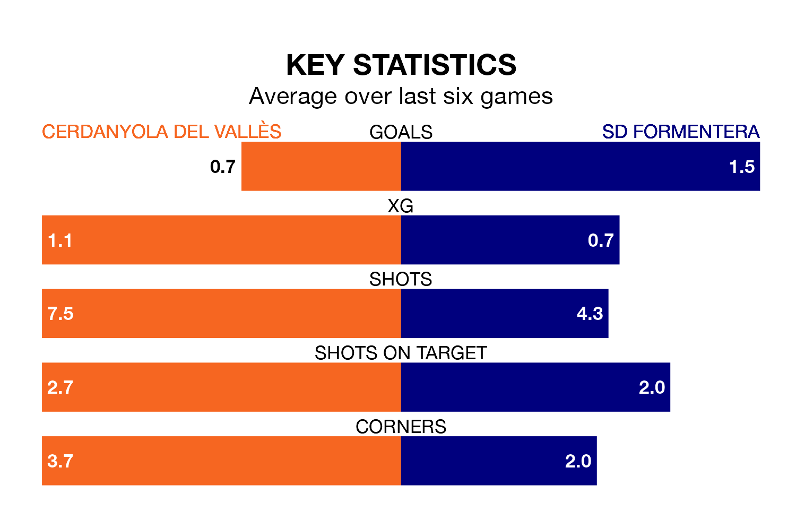

Cerdanyola del Vallès host SD Formentera on Sunday at Estadi Municipal La Bòbila-Pinetons in the Segunda División RFEF Group 3.
In their last league match, on April 28, Cerdanyola del Vallès lost to Espanyol B 3-1 away, with their goal scored by Serge Nicolás Kata Martínez.
Formentera won, 3-0 at home against Penya Independent, with Giuliano Bertino (two) scoring their goals.
Cerdanyola del Vallès are 15th in the table after 33 games, of which they have won nine and drawn 10, earning 37 points.
Formentera are two places ahead of the home team in 13th, with 11 wins and eight draws putting them on 41 points.
With 35 goals in 33 games so far this season, Cerdanyola del Vallès are scoring at below the league average rate with 1.1 goals per game. And they are conceding more than average, letting in 43 goals at a rate of 1.3 per game.
The visitors, meanwhile, are average scorers, with 1.2 goals per game. They have conceded 1.3 goals per game.
In the last three years, Cerdanyola del Vallès and Formentera have played each other on three occasions. Formentera won all of them.
Their last meeting was on January 7, when Formentera won 3-0 at home.
Cerdanyola del Vallès are in mixed form in the Segunda División RFEF Group 3, with two wins and two draws from their last six games.
And also with two wins and two draws over that period, Formentera's form is identical – they have both taken eight points from 18.
Updated: 10:44 (UTC), 30/04/24